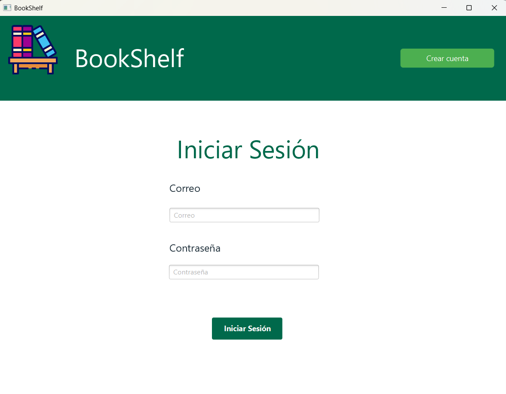
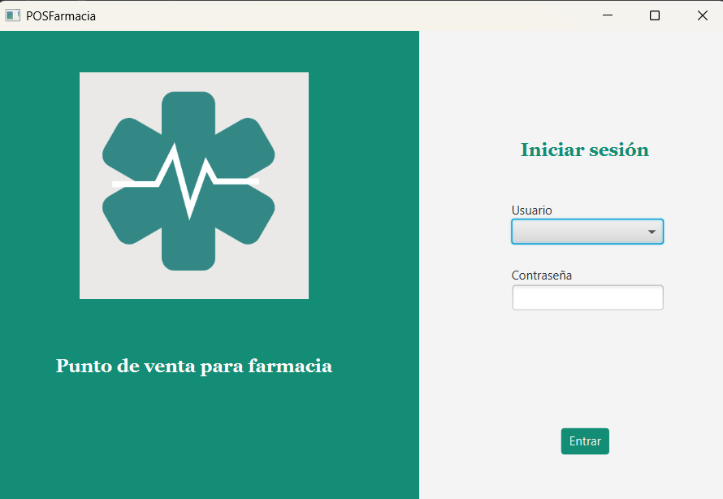
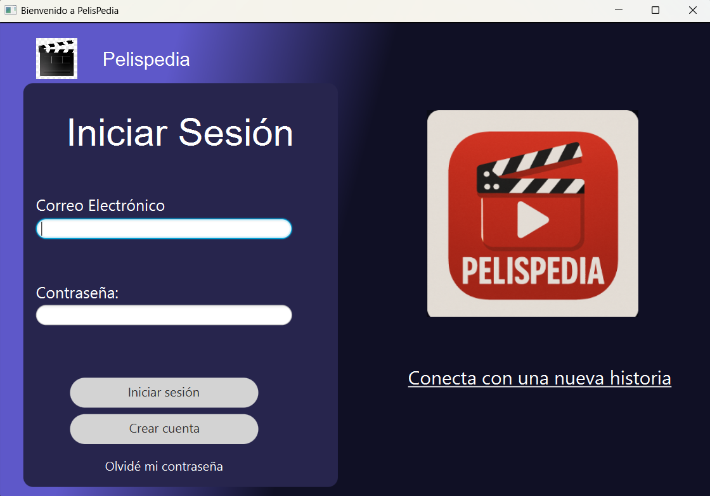

Mis Proyectos
Explora algunos de mis trabajos recientes
Inicio
Proyectos
Contacto
Galería de Proyectos
Da click en la imagen si quieres ver el repositorio del proyecto

Proyecto 1: Librería Virtual

Proyecto 2: Punto de Venta de una Farmacia

Proyecto 3: Aplicación para la Renta de Películas